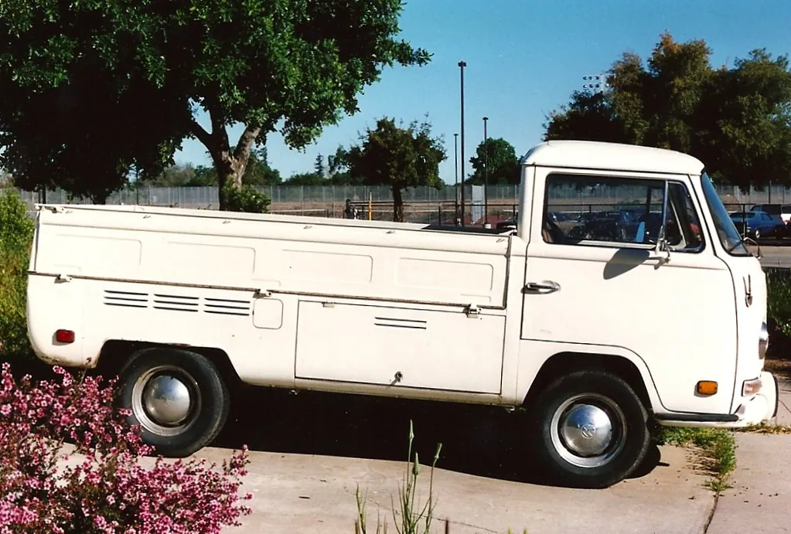

Maintenance Guides
The fundamentals of keeping a classic running sweetly — with a printable maintenance interval table and clear, safety-first procedures for the jobs an owner can reasonably do.

Safety first: Before any work: support a raised car on jack stands on firm, level ground — never a jack alone — and chock the wheels. Let a hot engine and exhaust cool before touching them. Work with good ventilation; never run an engine in a closed garage. Keep fuel, rags, and sparks apart. Wear eye protection. Brakes and fuel systems are safety-critical; if you are unsure, have a professional do or check the work.
The maintenance interval table
Classic cars, especially those driven only occasionally, run best on a schedule based on both time and mileage — whichever comes first. The table below is a sensible general guide; always defer to the specific intervals in your car's own factory manual, which account for its particular engine and design. Print it and keep it in the glovebox or on the shop wall.
| Task | Interval | Notes |
|---|---|---|
| Engine oil & filter | Every 3,000 miles or once a year | Old engines and short trips favor more frequent changes. |
| Check all fluid levels | Monthly / before a long drive | Oil, coolant, brake, transmission, power steering. |
| Tire pressure & condition | Monthly | Replace aged tires regardless of tread. |
| Grease / chassis lubrication | Every oil change, if fitted | Many classics have grease fittings modern cars lack. |
| Ignition points & timing | Every 6,000–12,000 miles | For older breaker-point ignitions; see below. |
| Coolant (antifreeze) | Every 2 years | Protects against freezing, boiling, and corrosion. |
| Brake inspection | Yearly | Safety-critical — have a pro check if unsure. |
| Brake fluid | Every 2 years | It absorbs moisture over time. |
| Air & fuel filters | Yearly or as needed | Keeps the engine breathing and fueling cleanly. |
Oil changes on older engines
Changing the oil is the most fundamental service there is, and on most classics it is well within an owner's reach. Fresh oil carries away heat and grit and keeps the engine's internals bathed and protected; old oil does the opposite.
What you'll need
- The correct oil type and quantity for your engine (check the manual)
- A new oil filter if your engine has one
- A drain pan, a wrench, and a filter wrench
- Jack stands, wheel chocks, and gloves
- A funnel and rags
- Warm the engine briefly so the oil flows, then switch off and let it cool enough to work safely.
- Raise and securely support the car on jack stands, and chock the wheels.
- Place the drain pan beneath the sump plug, remove the plug, and let the old oil drain fully.
- Remove the old filter (oil will spill — mind the pan), lightly oil the new filter's seal, and fit it hand-tight.
- Refit the drain plug with a fresh washer if needed, lower the car, and add the correct amount of new oil through the filler.
- Run the engine briefly, check for leaks, then re-check the level and top up as needed.
- Dispose of the old oil and filter responsibly at a recycling center — never down a drain.
Tip: Note the date and mileage of every oil change in your logbook. For a car driven only a few hundred miles a year, change the oil annually anyway; oil degrades with time as well as use. Warm oil also drains far more completely than cold, which is why a brief warm-up before draining pays off in a cleaner change.
Points and condenser basics
Many cars built before the 1970s use a breaker-point ignition rather than modern electronics. The points are a mechanical switch that fires the spark plugs, and they wear and need periodic attention — a classic tune-up task. Understanding them demystifies a great deal of old-car behavior.
Over time the points' gap changes as the rubbing block wears, which alters the ignition timing and can cause hard starting, rough running, and poor performance. The service involves checking and setting the point gap (or the related "dwell"), inspecting the condenser that protects them, and setting the ignition timing. It is a satisfying, learnable skill, but it calls for the correct specifications and often a simple tool or two.
Tip: If your classic runs rough or starts poorly, worn or misadjusted points are a classic culprit on older cars. The exact gap and timing figures are in your factory manual; follow them precisely, as small changes make a real difference.
Carburetor care, in overview
Before fuel injection, the carburetor mixed air and fuel for the engine, and it remains one of the most characterful parts of a classic. A well-set carburetor gives smooth idling and crisp response; a neglected one causes stumbling, flooding, or hard starting, often from stale fuel or dirt.
Basic care includes using fresh fuel (and a stabilizer for stored cars), keeping the air filter clean so the carburetor breathes properly, and having it cleaned and adjusted when it misbehaves. A full rebuild — replacing the internal gaskets and parts — is a deeper job that many owners learn to do but which rewards patience, cleanliness, and the correct rebuild kit. If a carburetor is badly worn or you are unsure, a specialist can rebuild or tune it expertly.
Inspecting the brakes
Safety first: Brakes are the most safety-critical system on any car. The notes here are for understanding and inspection only. Any actual brake repair should be done or thoroughly checked by a qualified mechanic — your life and others' depend on it.
On a classic, the brakes deserve regular, careful attention, because older systems are simpler and less forgiving than modern ones, and a car that sits can develop brake troubles even without use. A basic owner inspection, done regularly, catches problems early.
- Check the brake fluid level and look for any sign of leaks at the wheels or under the car.
- Listen and feel while driving slowly and safely: grinding, pulling, or a soft or sinking pedal all signal trouble.
- Have the pads or shoes, drums or discs, and flexible hoses inspected by a professional at least yearly.
- Replace brake fluid on schedule, as it absorbs moisture that lowers its performance over time.
Checking all the fluids
A classic depends on several fluids, and a monthly check of them all — a five-minute job — heads off a surprising number of troubles. Each has its own place and purpose.
- Engine oil: check on level ground with the engine off and cooled a moment; the dipstick should read between its marks.
- Coolant: check the level only when cold, at the overflow tank or (carefully) the radiator.
- Brake fluid: check the reservoir level; a dropping level can signal wear or a leak and warrants a professional look.
- Transmission fluid: on automatics, check per your manual, often with the engine warm and running; note the color and smell.
- Power steering and, if fitted, the battery's water: top up as the manual directs.
Tip: Learn what each fluid should look like when healthy. Milky oil, gritty brake fluid, or burnt-smelling transmission fluid are early warnings worth heeding before a small problem becomes a large bill.
Belts and hoses
The rubber belts and hoses under the hood are among the cheapest parts on the car and among the most important, for a failed one can strand you or even damage the engine. They also perish with age as much as with use, which matters for a little-driven classic.
- Inspect belts for cracks, fraying, or glazing, and check they are properly tensioned — neither slack nor over-tight.
- Squeeze hoses (when cool) to feel for softness, brittleness, or bulges, and look for cracks at the ends.
- Replace any belt or hose that shows its age; they are inexpensive insurance against a roadside failure.
- Keep a note of when they were last replaced, as age alone is reason enough to renew them eventually.
The cooling system
An engine that overheats can be ruined in minutes, so the cooling system earns its keep. On a classic, it is worth understanding and watching closely. The coolant (antifreeze mixed with water) carries heat from the engine to the radiator, where the airflow cools it; a water pump circulates it, a thermostat regulates the temperature, and hoses carry it around.
- Check the coolant level only when the engine is cold — never open a hot radiator cap, as scalding fluid can erupt.
- Inspect the hoses for cracks, bulges, or softness, and the radiator for leaks or clogged fins.
- Watch the temperature gauge; if it climbs toward hot, stop safely and let the engine cool before investigating.
- Replace the coolant every couple of years to maintain its anti-freeze and anti-corrosion protection.
Safety first: Never remove the radiator cap on a hot engine. The system is under pressure, and the escaping coolant can cause serious burns. Wait until everything is completely cool.
An overheating classic is one of the most common and most preventable roadside troubles, so a cooling system kept clean, filled, and leak-free is well worth the modest effort.
Master these fundamentals and you will keep a classic running sweetly for years. None of it requires a professional's training — only attention, the correct manual for your car, and a willingness to go slowly and safely. When your attention turns from upkeep to a bigger project, the Restoration Planning section helps you do it wisely.